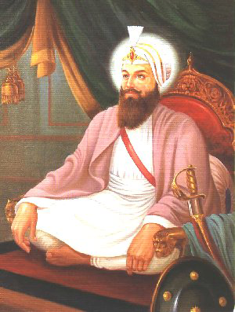

<center><body background="images1/khlihoij.png"width="1000"><TABLE width="1000" BORDER="0" cellpadding="0" cellspacing="0">
<tr><td colspan="2"><center></center>

<tr>
<td>
&nbsp;&nbsp;&nbsp;&nbsp;&nbsp;&nbsp;
<a href="images1/rai.png" width="1000"> <center> </center>
</td>
<td>
<FONT COLOR="#741111"><FONT SIZE="5">
The Seventh Guru - Guru Har Rai ji(1630 - 1661)
</font>
<br>
<FONT COLOR="#741111"><FONT SIZE="4">
Name : Guru Har Rai ji<br>
Parents : Baba Gurdita & Mata Nihal Kaur<br>
Born : February 26,1630<br>
Siblings : Brother - Dhir Mall<br>
Spouse : Mata Krishen Kaur<br>
Children : Baba Ram Rai & Guru Har Krishan<br>
Guruship : 1630 - 1661<br>
Joti Jot : 20 October 1661<br>
Age :31 years<br>
Bani :-------
<br>
</td>
</tr>

<tr><td colspan="2">
<FONT COLOR="#741111"><FONT SIZE="4">
<br>
Guru Hargobind Sahib, before his departure for heavenly abode, nominated his grand son, Har Rai Ji at the tender age of 14, as his successor (Seventh Nanak), on 3rd March, 1644. Guru Har Rai Sahib was the son of Baba Gurdita Ji and Mata Nihal Kaur Ji(also known as Mata Ananti Ji). Guru Har Rai Sahib married to Mata Kishan Kaur Ji(Sulakhni Ji) daughter of Sri Daya Ram Ji of Anoopshahr (Bulandshahr) in Utter Pradesh on Har Sudi 3, Samvat 1697. Guru Har Rai Sahib had two sons: Sri Ram Rai Ji and Sri Har Krishan Sahib Ji(Guru). 

Guru Har Rai Sahib was a man of peace but he never disbanded or discharged the armed Sikh Warriors(Saint Soldiers), who earlier were maintained by his grandfather (Guru Hargobind Sahib). He otherwise further boosted the military spirit of the Sikhs. But he never himself indulged in any direct political and armed controversy with the contemporary Mughal Empire. Once on the request of Dara Shikoh (the eldest son of emperor Shahjahan). Guru Sahib helped him to escape safely from the bloody hands of Aurangzebs armed forces during the war of succession. 

Once Guru Sahib was coming back from the tour of Malwa and Doaba regions, Mohamad Yarbeg Khan, (son of Mukhlis Khan, who was killed by Guru Hargobind Sahib in a battle) attacked the kafla of Guru Sahib with the force of one thousand armed men. The unwarranted attack was repulsed by a few hundred Saint Soliders of Guru Sahib with great courge and bravery. The enemy suffered a heavy loss of life and fled the scene. This self-defense measure, (a befitting reply to the unwarranted armed attack of the privileged muslims), was an example for those who professed the theory of so called non-violence or "Ahimsa Parmo Dharma". Guru Sahib often awarded various Sikh warriors with gallantry awards. 

Guru Sahib also established an Aurvedic herbal medicine hospital and a research centre at Kiratpur Sahib. There, he maintained a zoo also. Once Dara Shikoh, the eldest son of Shah Jahan fell seriously ill by some unknown disease. The best physicians available in the country and abroad were consulted, but there was no improvement. At last the emperor made a humble request to Guru Sahib for the treatment of his son. Guru Sahib accepting the request, handed over some rare and suitable medicines to the messenger of the emperor. The life of Dara Shikoh was saved from the cruel jaws of death. The emperor, whole heartily thanked and wanted to grant some "Jagir", but Guru Sahib never accepted.

Guru Har Rai Sahib also visited Lahore, Sialkot, Pathankot, Samba, Ramgarh and many places of Jammu and Kashmir region. He established 360 Sikh missionary seats (ManJis). He also tried to improve the old corrupt Masand system and appointed pious and committed personalities like Suthre Shah, Sahiba, Sangtia, Mian Sahib, Bhagat Bhagwan, Bahagat Mal and Jeet Mal Bhagat (also known as Bairagi), as the heads of ManJis.

Guru Har Rai Sahib faced some serious difficulties during the period of his guruship. The corrupt massands, Dhir Mals and Minas always tried to preclude the advancement of Sikh religion. After the death of Shah Jahan, the attitude of the state headed by Aurangzeb towards the non-muslims, turned hostile. 

The emperor Aurangzeb made an excuse for the help rendered to prince Dara Shakoh by Guru Sahib during the war of succession and framed false charges against Guru Sahib and was summoned to Delhi. Ram Rai Ji appeard on behalf of Guru Sahib in the court. He tried to clarify some mis-understandings regarding Guru Ghar and Sikh faith, created by Dhirmals and Minas. Yet another trap, which he could not escape, was to clarify the meaning of the verse "The Ashes of the Mohammadan fall into the potter's clot, It is molded into pots and bricks, and they cry out as they burn".

Ram Rai, in order to please the emperor and gain more sympathy replied that the text had been needlessly corrupted by some ignorant person and inserted the word Musleman instead of word Beiman (dishonest). (The actual meaning of the verse is that the human soul is not bound to the physical structure or the body of a person. The physical material of the bodies of both Hindus and Muselmans face the same fate and it is a universal truth. The soul leaves the body immediately after the death and it does not remain in the grave waiting for doom's day. And the earth consumes the body-material in due course of time) It is a rational and scientific view of Sikhism.

When Guru Har Rai Sahib was informed about this incident, he immediately excommunicated Ram Rai Ji from the Sikh Panth and never met him, through the later pleaded repeatedly for forgiveness. Thus Guru Sahib established a strict property for the Sikhs against any alteration of original verse in Guru Granth Sahib and the basic conventions set up by Guru Nanak Sahib.

Knowing that the end was near, Guru Har Rai Sahib installed his younger son Har Krishan as the Eighth Nanak and passed away on Kartik Vadi 9 (5 Kartik), Bikrami Samvat 1718, (6th October, 1661) at Kiratpur Sahib.